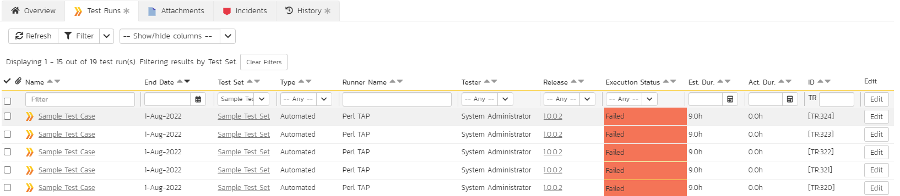
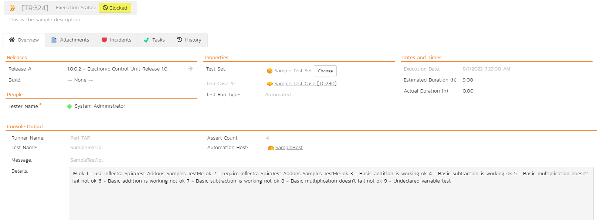

Integrating with Perl TAP
Installing the Perl TAP Extension
This section outlines how to install the SpiraTest extensions for Perl's Test Anything Protocol (TAP) so that you can then run automated Perl TAP unit tests against a Perl application and have the results be recorded as test runs inside SpiraTest. It assumes that you already have a working installation of SpiraTest v2.3 or later, and a working Perl development environment. If you have an earlier version of SpiraTest you will need to upgrade to at least v2.3 before trying to use this extension.
To obtain the latest version of the TAP extension you simply need to go to http://www.inflectra.com/SpiraTest/Downloads.aspx page and download the Perl TAP Extension compressed archive (.zip). This process is described in the SpiraTest Administration Guide in more detail.
The TAP extension is provided as a set of Perl library files (.pm) that can be imported into your existing TAP test harnesses to add the SpiraTest reporting functionality. Once you have downloaded the Zip archive, you simply need to uncompress it and copy the Inflectra folder (and subfolders) into the standard Perl library location (e.g. C:\Perl\lib on Windows). The sample files (the ones ending in .pl) that are not located in a folder can be put into a folder of your choice.
Once you have completed this step, you are now ready to begin running one of the provided samples or use your existing TAP unit tests with SpiraTest.
Using Perl TAP Extension with SpiraTest
The typical code structure for a Perl TAP test harness is as follows:
a) The sample test harness - SampleHarness.pl
#this is a test case that tests addition operations
#!/usr/bin/perl -w
use TAP::Harness;
#instantiate the harness
my $harness = TAP::Harness ->new;
#define the list of tests to be executed
my @tests = ("SampleTest1.pl", "SampleTest2.pl");
$harness->runtests(@tests);
b) One of the sample test fixtures -- Sample1Test.pl
#!/usr/bin/perl -w
# Specify our plan, how many tests we're writing
use Test::More tests => 9;
# or alternately, if we don't know how many:
# use Test::More qw(no_plan);
# Check that our module compiles and can be "use"d.
BEGIN { use_ok( 'Inflectra::SpiraTest::Addons::Samples::TestMe' ); }
# Check our module can be required. Very similar test to that above.
require_ok( 'Inflectra::SpiraTest::Addons::Samples::TestMe' );
# There are a number of ways to generate the "ok" tests. These are:
# ok: first argument is true, second argument is name of test.
# is: first argument equals (eq) second argument, third argument is name of test.
# isnt: first argument does not equal (ne) the second, third is name of test
# like: first argument matches regexp in second, third is name of test
# unlike: first argument does not match regexp, third is name of test
# cmp_ok: compares first and third argument with comparison in second. Forth is test name.
# Here are some examples that should PASS
ok( add(1,1) == 2, "Basic addition is working");
is ( subtract(2,1), 1, "Basic subtraction is working");
isnt( multiply(2,2), 5, "Basic multiplication doesn't fail");
# Here are some examples that should FAIL
ok( add(1,1) == 3, "Basic addition is working");
is ( subtract(2,1), 0, "Basic subtraction is working");
isnt( multiply(2,2), 4, "Basic multiplication doesn't fail");
# Here is an example of a test that throws an ERROR
is($notdeclared, 1, "Undeclared variable test");
The TAP test cases in the sample code use the Test::More library which provides the necessary assertion methods for testing results from the code under test. The tests are themselves executed by adding their filenames to an array passed to the default TAP::Harness class. To run the test cases, you just need to execute the SampleHarness.pl file from the command line, and the test output will be echoed onto the screen.
Now, to use SpiraTest with TAR, each of the TAP test case files (e.g. SampleTest1.pl, SampleTest2.pl in our example) needs to have a corresponding test case in SpiraTest. These can be either existing test cases that have manual test steps or they can be new test cases designed specifically for automated testing and therefore have no defined test steps. In either case, no changes need to be made to the individual test cases, but the following changes need to be made to the test harness (illustrated in yellow below):
#this is a test case that tests addition operations
#!/usr/bin/perl -w
use Inflectra::SpiraTest::Addons::SpiraHarness::Harness;
#instantiate the harness
my $harness = Inflectra::SpiraTest::Addons::SpiraHarness::Harness->new;
#specify the spiratest custom harness properties
$spira_args = {};
$spira_args->{"base_url"} = "http://localhost/SpiraTest";
$spira_args->{"user_name"} = "fredbloggs";
$spira_args->{"password"} = "fredbloggs";
$spira_args->{"project_id"} = 1;
$spira_args->{"release_id"} = 1;
$spira_args->{"test_set_id"} = 1;
$harness->{"spira_args"} = $spira_args;
#define the list of tests and their SpiraTest Mapping
#Hash is of the format: TestFile => Test Case ID
my $tests = {};
$tests->{"SampleTest1.pl"} = 2;
$tests->{"SampleTest2.pl"} = 3;
$harness->runtests($tests);
Firstly you need to use the SpiraTest specific harness rather than the general TAP::Harness library. This new class is actually a subclass of the standard one, so it supports all the same methods, with the exception of the runtests command, which now accepts a Perl hashref rather than a simple array.
Also you need to create and pass a hashref of arguments to the test harness (the spira_args property on the instantiated harness class) so that it knows how to access the SpiraTest server during test execution:
base_url-- The base URL used to access your instance of SpiraTest (e.g. http://myserver/SpiraTest). It should include the protocol (e.g. http/https), the server-name, the port number (if not 80/443) and the virtual directory (if there is one).
user_name - A valid username for the instance of SpiraTest that has access to the project specified above
password - A valid password for the user specified above
project_id - The ID of the project inside SpiraTest (this can be found on the project homepage in the "Project Overview" section)
release_id - The ID of the SpiraTest release to associate the test run with. This can be found on the releases list page (click on the Planning > Releases tab). If you don't want to associate the test run with a specific release, just comment out the line.
test_set_id - The ID of the SpiraTest test set to associate the test run with. This can be found on the test set list page (click on the Testing > Test Sets tab). If you don't want to associate the test run with a specific test set, just comment out the line.
Finally instead of passing a simple array of the test case files to be executed, you instead need to create a Perl hashref and pass that to the runtests(...) method. The hashref needs to contain a list of the various test case files and their associated SpiraTest Test Case ID with the TC prefix removed (e.g. test case TC00005 would be just 5).
Now all you need to do is save your code, run the test fixtures as you would normally do (e.g. by executing from the command line), and when you view the test cases in SpiraTest, you should see a Perl::TAP automated test run displayed in the list of executed test runs:

Clicking on one of the Perl::TAP test runs will bring up a screen that provides information regarding what Perl::TAP test method failed, what the error was, together with the associated code stack-trace:

Congratulations... You are now able to run Perl TAP unit tests and have the results be recorded within SpiraTest. The sample test suite SampleHarness.pl together with its two test cases (SampleTest1.pl and SampleTest2.pl) is provided with the installation.